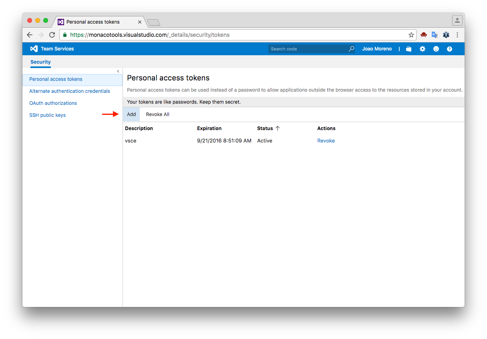
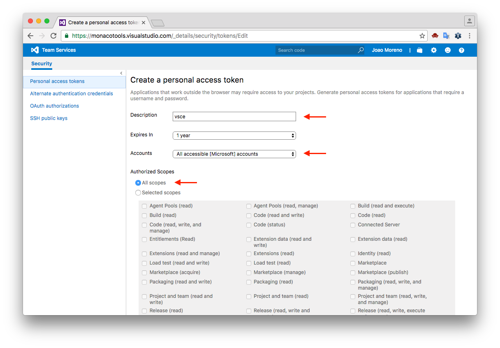

Publishing Extensions
vsce - Publishing Tool Reference
vsce is the command line tool you'll use to publish extensions to the Extension Marketplace. You can also load extensions locally and share them via email or a UNC drive.
Installation
Make sure you have Node.js installed. Then run:
npm install -g vsce
Usage
You'll use the vsce command directly from the
command line. For example, here's how you can quickly publish
an extension:
$ vsce publish
Publishing uuid@0.0.1...
Successfully published uuid@0.0.1!
For a reference on all the available commands, run
vsce --help.
Note: Due to security concerns,
vsce will not publish extensions which contain
user provided SVG images.
The publishing tool checks the following constraints:
-
The icon provided in
package.jsonmay not be an SVG. -
The badges provided in the
package.jsonmay not be SVGs unless they are from trusted badge providers. -
Image URLs in
README.mdandCHANGELOG.mdneed to resolve tohttpsURLs. -
Images in
README.mdandCHANGELOG.mdmay not be SVGs unless they are from trusted badge providers.
Publishing Extensions
Visual Studio Code leverages Visual Studio Team Services for its Marketplace services. This means that authentication, hosting and management of extensions is provided through that service.
vsce can only publish extensions using
Personal Access Tokens. You need to create at least one in order to publish an
extension.
Get a Personal Access Token
First, make sure you have a Visual Studio Team Services account.
In the following examples, the account name is
monacotools. From your account's home page (for
example: https://monacotools.visualstudio.com),
go to the Security page:

Click Add to create a new Personal Access Token:

Give the Personal Access Token a nice description, optionally extend its expiration date to 1 year, make it access every account and set the authorization to all scopes:

The next screen will display your newly created Personal Access Token. Copy it, you'll need it to create a publisher.
Create a Publisher
A publisher is an identity who can publish
extensions to the Visual Studio Code Marketplace. Every
extension needs to include a publisher name in
its
package.json file.
Once you have a
Personal Access Token, you can create a new publisher using vsce:
vsce create-publisher (publisher name)
vsce will remember the provided Personal Access
Token for future references to this publisher.
Note: Alternatively, create your publisher in
the Marketplace publisher
management page
and login in vsce, as described in the next
section.
Login to a Publisher
If you already created a publisher before and want to use it
with vsce:
vsce login (publisher name)
Similarly to the create-publisher command,
vsce will ask you for the Personal Access Token
and remember it for future commands.
You can also enter your Personal Access Token as you publish
with an optional parameter -p <token>.
vsce publish -p <token>
Auto-incrementing the Extension Version
You can auto-increment an extension's version number when you
publish by specifying the
SemVer compatible number to
increment: major, minor, or
patch.
For example, if you want to update an extension's version from
1.0.0 to 1.1.0, you would specify minor:
vsce publish minor
This will modify the extension's package.json
version
attribute before publishing the extension.
You can also specify a complete SemVer compatible version on the command line:
vsce publish 2.0.1
Unpublishing Extensions
You can unpublish an extension with the vsce tool by
specifying the extension id publisher.extension.
vsce unpublish (publisher name).(extension name)
Note: When you unpublish an extension, the Marketplace will remove any extension statistics it has collected. You may want to update your extension rather than unpublish it.
Packaging Extensions
You may want to package extensions without publishing them to
the store. Extensions will always be packaged into a
.vsix file. Here's how:
vsce package
This will package your extension into a
.vsix file and place it in the current directory.
It's possible to install .vsix files into Visual
Studio Code. See
Install from a VSIX
for more details.
Sharing Privately with Others
If you want to share your extension with others privately, you
can send them your packaged extension .vsix file.
Visual Studio Code Compatibility
When authoring an extension, you will need to describe what is
the extension's compatibility to Visual Studio Code itself.
This can done via the engine.vscode field inside
package.json:
{
"engines": {
"vscode": "^1.8.0"
}
}
A value of 1.8.0 means that your extension is
compatible only with VS Code 1.8.0. A value of
^1.8.0 means that your extension is compatible
with VS Code 1.8.0 and onwards, including
1.8.1, 1.9.0, etc.
You can use the engine.vscode field to make sure
the extension only gets installed for clients which contain
the API you depend on. This mechanism plays well with the
Stable release as well as the Insiders one.
For example, imagine that the latest Stable version of VS Code
is 1.8.0 and that during 1.9.0's
development a new API is introduced and thus made available in
the Insider release through version
1.9.0-insider. If you want to publish an
extension version which benefits from this API, you should
indicate a version dependency of ^1.9.0. Your new
extension version will be installed only on VS Code
>=1.9.0, which means all current Insider
customers will get it, while the Stable ones will only get the
update when Stable reaches 1.9.0.
Advanced Usage
Marketplace Integration
You can customize how your extension looks in the Visual Studio Marketplace. See the Go extension for an example.
Here are some tips for making your extension look great on the Marketplace:
-
A
README.mdfile at the root of your extension will be used to populate the extension's Marketplace page's contents.vscewill modify README links for you in two different ways: -
If you add a
repositoryfield to yourpackage.jsonand if it is a public GitHub repository,vscewill automatically detect it and adjust the links accordingly. -
You can override that behavior and/or set it by using the
--baseContentUrland--baseImagesUrlflags when runningvsce package. Then publish the extension by passing the path to the packaged.vsixfile as an argument tovsce publish. -
A
LICENSEfile at the root of your extension will be used as the contents for the extension's license. -
A
CHANGELOG.mdfile at the root of your extension will be used as the contents for the extension's change log. -
You can set the banner background color by setting
galleryBanner.colorto the intended hex value inpackage.json. -
You can set an icon by setting
iconto a relative path to a squared128pxPNG file included in your extension, inpackage.json.
Also see Marketplace Presentation Tips.
.vscodeignore
You can create a .vscodeignore file to exclude
some files from being included in your extension's package.
This file is a collection of
glob
patterns, one per line.
For example:
**/*.ts
**/tsconfig.json
!file.ts
You should ignore all files not needed at runtime. For
example, if your extension is written in TypeScript, you
should ignore all **/*.ts files, like in the
previous example.
Note: Development dependencies listed in
devDependencies will be automatically ignored,
you don't need to add them to the
.vscodeignore file.
Pre-publish step
It's possible to add a pre-publish step to your manifest file. The command will be called every time the extension is packaged.
{
"name": "uuid",
"version": "0.0.1",
"publisher": "joaomoreno",
"engines": {
"vscode": "0.10.x"
},
"scripts": {
"vscode:prepublish": "tsc"
}
}
This will always invoke the TypeScript compiler whenever the extension is packaged.
Next Steps
- Extension Marketplace - Learn more about VS Code's public extension Marketplace.
- Testing Extensions - Add tests to your extension project to ensure high quality.
Common Questions
Q: I get 403 Forbidden (or 401 Unauthorized) error when I try to publish my extension?
A: One easy mistake to make when creating the
PAT (Personal Access Token) is to not select
all accessible accounts in the Accounts field
drop-down (instead selecting a specific account). You should
also set the Authorized Scopes to All scopes for
the publish to work.
Q: I can't unpublish my extension through the
vsce tool?
A: You may have changed your extension ID or publisher name. You can also manage your extensions directly on the Marketplace by going to the manage page. You can update or unpublish your extension from your publisher manage page.
Q: Why does vsce not preserve file attributes?
A: Please note that when building and
publishing your extension from Windows, all the files included
in the extension package will lack POSIX file attributes,
namely the executable bit. Some
node_modules dependencies rely on those
attributes to properly function. Publishing from Linux and
macOS works as expected.